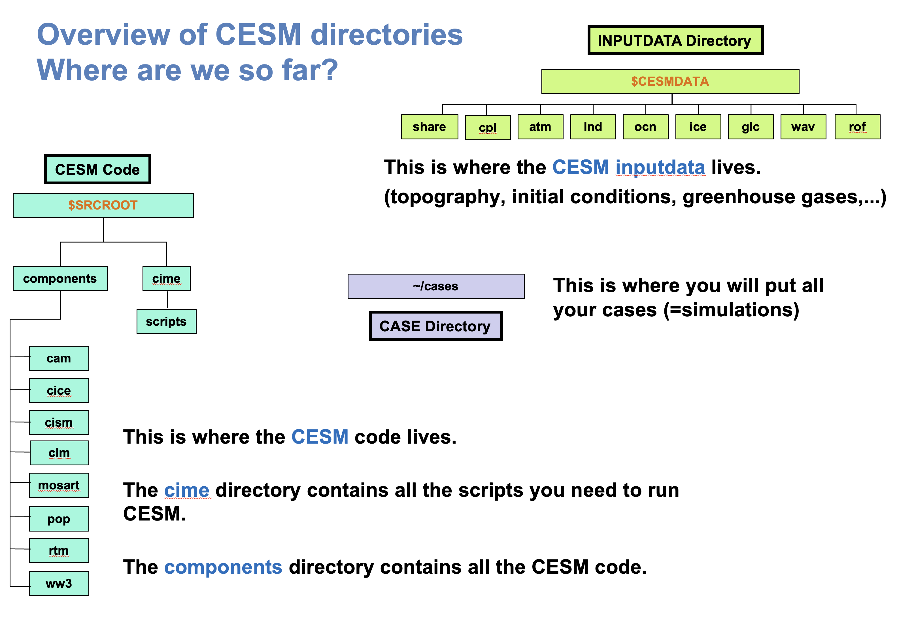

CESM directories after download#
So far, we have downloaded the CESM code. Before creating your first experiment, let’s review which of the five CESM directories are already available and which CESM will create later.
CESM code: this is where the CESM code lives.
The
cimedirectory contains all the scripts you need to run CESM.The
componentsdirectory contains all the CESM model code.
Inputdata directory: this is where the CESM input data lives (topography, initial conditions, greenhouse gases, …).
Case directory (
~/cases): this is where you will put all your cases (= simulations).

Where are we in the CESM maze?#
You have completed the first step: downloading the CESM source code. Before creating your first experiment, let’s review which of the five CESM directories are already available and which CESM will create later.

Directory |
Where are we now? |
|---|---|
CESM code |
|
Input data |
|
Case |
|
Build/run** |
Not created yet. |
Archive |
Not created yet. |
In the next section, you will create your first CESM case. This will add the case directory to the maze. The build/run and archive directories will appear during later steps.